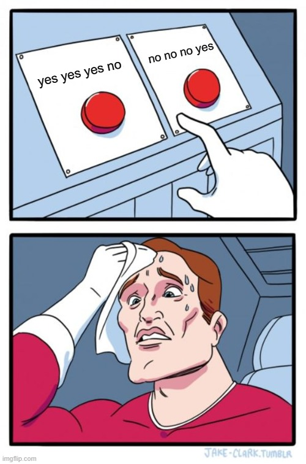
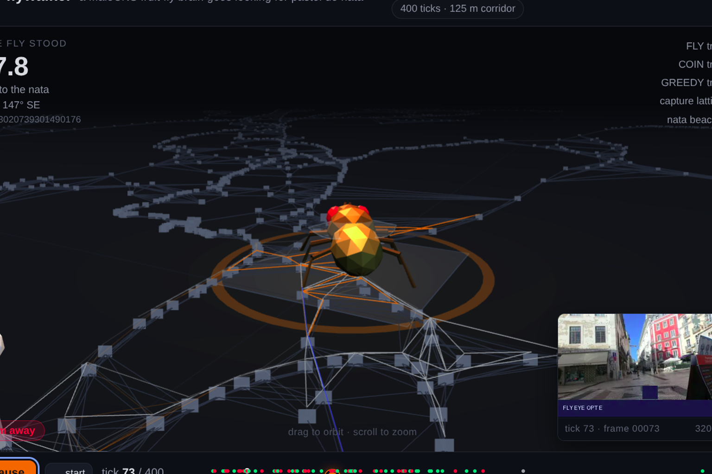
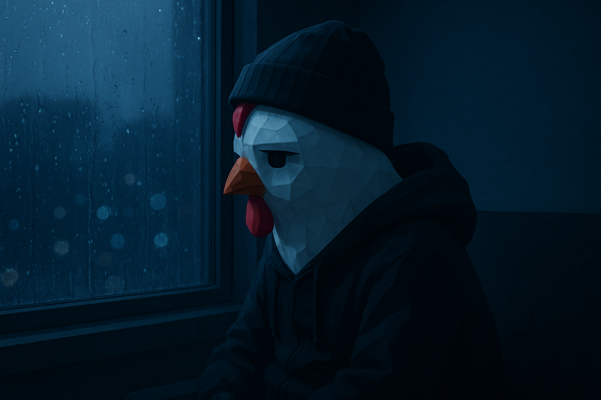
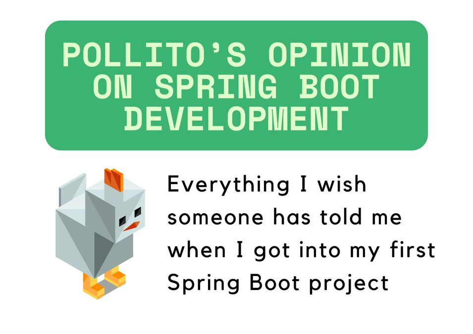
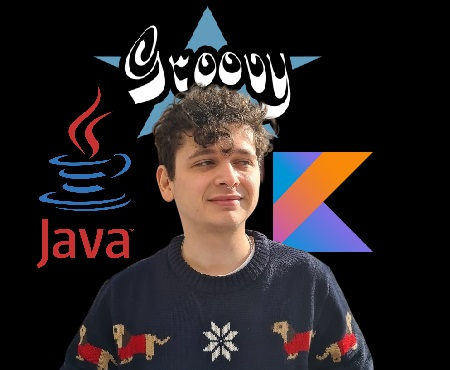

Hi, I'm Pollito.
Software developer in Lisbon. I write about Java, cloud, AI tooling, and the things I build after hours.
Currently building AI code-analysis tools at Devsu. Previously: Spring Boot, identity systems, and more VPS reboots than I care to count.

Latest entry
I Put a Fruit Fly Brain Behind MCP Tools So My Agent Could Ask It for Trading Advice
fly-mcp: the MaleCNS v1.0 connectome exposed as MCP tools on a disposable GCP VM, one real consult from opencode, and a mostly-HOLD oracle that is honest about being a comedy oracle.
Recent entries
All entries →
I Gave a Fruit Fly Brain Legs and Sent It Looking for Pastel de Nata
Programming talk
How to Approach a Large Software Project
Programming talk

The Chaotic Pipeline That Is Software Development in Modern Times
Programming talk

I Built A Spring Boot Guide
Programming talk

I Built The Same App Thrice
Programming talk